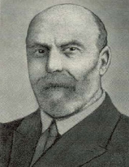

|  |
Eales' disease = Idiopathic inflammatory disorder of the retinal vessels (mainly veins) with recurrent vitreous and retinal haemorrhages giving sudden visual impairment. It is thought to be related to tuberculosis.
Henry Eales was born at Newton Abbot, the son of the vicar of Yealmpton in Devonshire. While an apprentice to the village doctor, and following an outbreak of scarlet fever which led him to test patient’s urine for the presence of protein, he incidentally examined his own and found himself to have heavy proteinuria. As a result he had a year’s convalescence before he enrolled in medicine at the University College, London.
Eales had a fine undergraduate record and graduated M.R.C.S. in 1873 and then interned at the Birmingham and Midland Eye Hospital. He was demonstrator in anatomy and medical tutor at Queen’s College, and in 1878 was appointed honorary surgeon to the Eye Hospitals, where he remained for 35 years. He was well known for his abilities with the ophthalmoscope and built up a very big consulting practice. He wrote a number of papers, amongst which was a review of the appearance of the retina in patients with renal disease.
Apart from occasional migraine he enjoyed good health and the proteinuria did not return. Shortly before his death he developed pain in his left calf which waxed and waned for 10 days, forcing him to go to bed, and he died sometime thereafter following syncopal attack, possibly due to pulmonary embolus.
1.Eales H: Causes of retinal hemorrhage associated with epistaxis and constipation. Birm Med Rev 9:262, 1880.
2.Eales H: Primary retinal hemorrhages in young men. Ophthalmol
Rev 1:41, 1882.